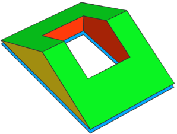
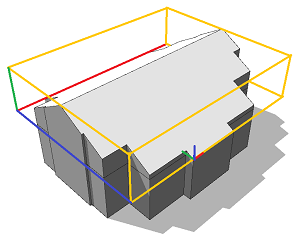
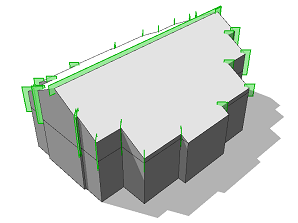
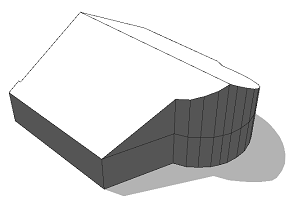
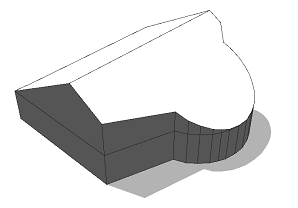
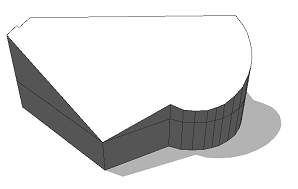

roofRidge operation
valueType selector { byAngle | byHeight } Type of roof generation.
value float Angle or height of the roof-planes as specified by valueType.
The roofRidge operation builds a roof perpendicular to each face of the current shape's geometry. In contrast to the roofHip operation and the roofGable operation only one ridge is constructed. On arbitrary shapes no hips or gables are created but the shape outline becomes part of two angled roof planes.
The ridge is oriented wrt. the x-axis of the scope. Namely, the resulting ridge is parallel to the scope's x-axis projected to the face plane. To orient the ridge align the scope using operations like alignScopeToGeometry, alignScopeToGeometryBBox or rotateScope.
Scope
The scope orientation is set in the following way:
- x-axis direction is kept as much as possible (old x-axis is projected to the plane of the first face)
- y-axis along the face normal of the first face
- z-axis normal to the two above
The scope's sizes are adjusted to tighly fit the extruded geometry.
Component tags

The operation automatically applies semantic component tags to the resulting face components:
| "roof.bottom" | Blue: original face. |
| "roof.side.outer" | Yellow: side faces. |
| "roof.side.inner" | Red: side faces from holes. |
| "roof.top" | Green: roof faces. |
For more information on working with component tags, refer to:
Related
Examples
Scope and trim planes

Lot --> extrude(10) Mass
Mass --> comp(f) { top : Top | side = Sides. }
Top --> roofRidge(byAngle, 30) Roof
A roof with roof slope 30 degrees is built on top of an extruded lot. Note the setting of the pivot and scope.

Roof --> set(trim.horizontal, true)
comp(f) { all : Face. }
After a component split, each roof face contains trim planes to cut bricks on insertion.
Ridge orientation

Lot --> extrude(10) Mass
Mass --> comp(f) { top : Top | side = Sides. }
Top --> alignScopeToGeometryBBox(xy)
roofRidge(byAngle, 30)
The scope is aligned to the top face using alignScopeToGeometryBBox with the xy selector. As a result the x-axis of the scope is the longer extent of the minimum area bounding rectangle. The resulting ridge is oriented "along" the shape.

Top --> alignScopeToGeometryBBox(yx)
roofRidge(byAngle, 30)
Using a different selector yx will align the scope such that the scope x-axis is the shorter extent. The resulting ridge is oriented "across" the shape.

Top --> alignScopeToGeometryBBox(xy)
rotateScope(0, 0, 45)
roofRidge(byAngle, 30)
The scope is rotated by 45 degress. The resulting ridge is oriented "diagonally" to the shape.